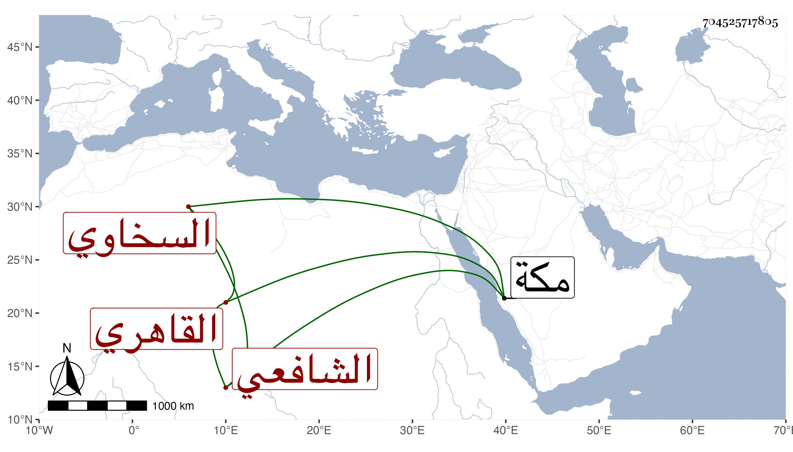

0902Sakhawi.DawLamic.ITO20230111-ara1.EIS1600.704525717805
Biography ID: 704525717805
117
أبو بكر بن عبد الرحمن بن محمد بن أبي بكر بن عثمان شقيقي الزين السخاوي الأصل القاهري الشافعي . ولد في أواخر سنة خمس وأربعين وثمانمائة بمنزلنا الشهير ونشأ به في كنف أبويه فحفظ القرآن والعمدة والمنهاج الفرعي وجمع الجوامع وألفيتي الحديث والنحو وغيرها وعرض على جماعة كسعد الدين بن الديري ومدين والشمني وابن الهمام والأقصرائي وأبي الفضل المغربي وأحضرته على العز بن الفرات بل أسمعته على شيخنا وخلق وأجاز له جم غفير من أماكن شتى وأخذ العربية عن النور الوراق والابدي وبه انتفع وغيرهما وكذا قرأ على أبي السعادات البلقيني في المغنى وعنه وعن السيد النسابة والفخر عثمان المقسي أخذ الفقه بل حضر قليلا عند العلم البلقيني والمناوي وقرأ على إمام الكاملية في شرحه على المنهاج الأصلي ولازم السيف الحنفي وابن حجى والكوراني في دروس الكشاف والشمس الشرواني في أصول الدين والتقي الحصني في فنون كالمعاني والبيان والمنطق وبعض الفضلاء في الفرائض والحساب وقرأ على المحب بن الشحنة في تفسير ابن كثير وغيره وعلى البقاعي في غيبتي يسيرا من شرح ألفية العراقي بل أخذه عني بتمامه مع نحو مجلد من النكت التي كتبتها على شرح المصنف وجملة من تصانيفي وغيرها رواية ودراية واستملى علي وتردد في ابتدائه لابن قاسم وابن بردبك ثم للزين الأبناسي والشرف عبد الحق وابن عز الدين السنباطيين في آخرين كالزين زكريا والنور السنهوري وتميز في العربية وشارك في غيرها مع صحة الفهم وسرعة الذكاء واستقامة التصور والتحري في المباحثة والإقراء وتصدى للتدريس في الفقه وأصوله والعربية وغيرها وأخذ عنه غير واحد ممن صار في المدرسين وقسم الكتب في كل سنة وعمل أجلاسا هائلا في سنة سبع وسبعين حضر عنده فيه الأعيان كالعبادي والتقى الحصني والجوجري والبهاء المشهدي والعز السنباطي وابن قمر وابن المرخم والعلاء البلقيني مع كونه ممن حضر عندهما في الألجيهية ومن شاء الله ممن عينت أكثرهم في موضع آخر وأخبر جمع جم بعدم رؤية مثل ذاك المجلس وكذا عمل أجلاسا أحفل منه حين استقر في تدريس تربة الست وكان ممن حضر فيه ابن حجي وابن الغرز وولي إعادة الحديث بالبيبرسية والخطابة بالباسطية وخزن كتبها بل ناب عني في تدريس الحديث بالصرغتمشية سنتين وكذا في التصدير بالجيعانية وربما أفتى وقصد في عرض الأبناء وكتب بخطه الكثير ومن ذلك شرحي للألفية وجملة من تصانيفي بل كتب شرحا على الجرومية والقواعد لابن هشام وعلى أمهات الأولاد من المنهاج وقرض له بعضها الزين زكريا والكمال بن أبي شريف وكاتبه بل كتبت له إجازة حافلة وحج ورزق الأولاد واستعان في معيشته بالتكسب على وجه جميل وعرض عليه القضاء فأبى ووصفه الجماعة في عرض ولده بما هو جدير بأكثر منه فزكريا بالشيخ الإمام العلامة والأخميمي بالشيخ الإمام العالم العلامة واللقاني بالشيخ العالم العلامة وابن تقي بالشيخ زين الدين شرف العلماء أوحد الفضلاء في العالمين والسعدي بسيدنا الشيخ العلامة شرف العلماء العاملين صدر المدرسين مفتي المسلمين وكاتب السر بصاحبنا الشيخ الفاضل المشار إليه والخيضرمي بالشيخ الإمام العلامة المحقق المتقن الفهامة والبامي بسيدنا الشيخ الإمام العالم العلامة وابن قاسم بالشيخ الإمام العلامة زين الملة والدين وجعفر بسيدنا ومولانا الشيخ الإمام العالم العامل الأوحد العلامة صدر المدرسين مفيد الطالبين مفتي المسلمين والديمي بالشيخ الإمام العالم المفنن مفيد الطالبين بقية المحققين والكوراني بالشيخ العالم العلامة تقي الدين والبدر بن خطيب الفخرية بالشيخ الإمام العالم العلامة والبحر الفهامة زين الدين صدر المدرسين مفيد الطالبين وسبط شيخنا بالشيخ الإمام العالم الأوحد زين الدين صدر المدرسين مفتي المسلمين وعبد الحق بسيدنا الشيخ الإمام العالم العلامة والابشبهي بسيدنا الشيخ الإمام العالم العلامة من برع في العلوم من حين ترعرع وشرب منها بالكأس المترع وأظهر فرائد المنثور والمنظوم وحقق المنطوق منها والمفهوم والبدر بن الديري بسيدنا ومولانا الشيخ الإمام العالم العلامة الزيني عين المدرسين مفتي المسلمين والسري بن الشحنة بسيدنا الشيخ الإمام العالم العلامة والشيشيني الحنبلي بالشيخ الإمام القدوة العلامة زين الدنيا والدين في آخرين ولم يزل على طريقته في الإقبال على العلم مع القيام بالتكسب على العيال ومزيد كدره من أم أولاده مما ليس الخبر فيه كالعيان وهو متجلد متنهد إلى أن انحط ولزم الوساد وتوالى عليه أمراض وآلام وقاسى شدائد وتفتحت في يديه عدة أماكن ونفد ما كان بيده وهي مع ذلك تعالجه وتناكده بحيث أن مدة مرضه وقبله كان لأجل رضاها مقيما بها ببركة الرطلى وكان الأحباب يتكلفون لعيادته ولمشاهدته وهي تأبى الرجوع بل وتسأل في الطلاق ثم تحول بغير رضا منها إلى بيتنا وأبت أن توافقه وبالغت حتى أجابها لسؤلها مع بذلها وإبرائها ودام أياما ثم مات في رابع ذي الحجة سنة ثلاث وتسعين ودفن من يومه وكان له مشهد حافل وأرخت السماء مطرا من حين المرور بجنازته إلى انتهاء دفنه بل استمر المطر أسبوعا عوضه الله الجنة وإيانا فقل أن أعلم في مجموعه مثله متانة دين وصدق لهجة وبديع تصور وصحة فهم واتقان في علمه وكتابته وتحرز في نقله مع الصفاء والضياء والمحاسن ولما بلغتني وفاته وأنا بمكة صلى عليه بها صلاة الغائب وفرقت له الربعة أياما بل قرأ غير واحد من جماعتنا له ختمات ولقد كان لي به جمال وانتفاع في الغيبة والحضور فعند الله أحتسب مصيبتي به وأسأله خير العوض .
